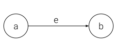
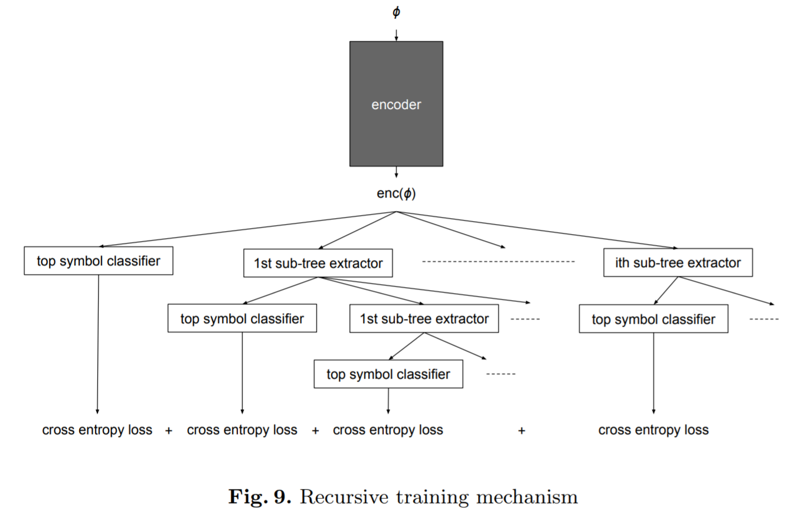

Clause Representation for Proof Guidance using Neural Networks
John (Jack) McKeownSupervised by Dr. Geoff Sutcliffe
Outline
- Introduction to Automated Reasoning
- Given Clause Selection
- Research Goals
- MPTPTP2078 Dataset
- The E Theorem Prover
- Previous Work
- Supervised Approaches
- Unsupervised Approaches
- Results
- Future Research
Automated Reasoning
Propositional Logic
- Boolean satisfiability is NP-Complete
- Surprisingly fast heuristic solvers exist nonetheless
Example:
$ jack\_is\_happy \implies jack\_drank\_coffee$
$ jack\_is\_happy \implies jack\_drank\_coffee$
First Order Logic
- Complete (all tautologies are theorems)
- Practical for more real world problems
Example:
$ \forall X (happy(X) \implies drank(X, coffee)) $
$ \forall X (happy(X) \implies drank(X, coffee)) $
Typed First Order Logic
- Types allow for static type-checking to make problem formulation easier.
Example:
$ \forall (X:person) (happy(X) \implies drank(X, coffee)) $
$ \forall (X:person) (happy(X) \implies drank(X, coffee)) $
Higher Order Logic
- Incomplete
- Quantification over functions/predicates
- Very expressive but very abstract
- Types necessary to avoid Russell's Paradox
Automated Theorem Proving
- Proving conjectures to be theorems of a set of axioms using computational methods
- Saturation means finding the closure of set of formulae under a set of inference rules.
- Proofs by contradiction via saturating $axioms \cup \{\neg conjecture\}$
Given Clause Selection
Converting Formulae to Clauses
$$\forall X \exists Y (p(Y) \; | \; (q \; \& \; r(X)))$$ becomes$\{\; $$p(sk(X))\;|\;q$$,\;$ $p(sk(X))\;|\;r(X)$$ \;\} $
- Improving given clause selection is a core goal of ATP research
Research Goals
Clause Embedding
p(f(X,a),
a)
|
q(f(X,a),
g(a,b,c))
| c!=s
$\rightarrow$
$\rightarrow$
$$
\newcommand\mycolv[1]{\begin{bmatrix}#1\end{bmatrix}}
\mycolv{1.2\\-0.2\\0.9\\ \vdots}
$$
p(f(X,a),
a)
|
q(f(X,a),
g(a,b,c))
| c!=s
Classification
$$
\underbrace{
\mycolv{1.2\\-0.2\\0.9\\ \vdots}
}_\text{Given Clause},
\underbrace{
\begin{bmatrix}
0.3 & -1.1 & 0.7 & \cdots \\
1.3 & -0.3 & -0.3& \cdots \\
0.1 & 0.24 & 0.2& \cdots \\
\vdots & \vdots & \vdots & \ddots
\end{bmatrix}
}_\text{Context Clauses}
$$
$\rightarrow$
Classifier
$\rightarrow$
Select or Don't
Within E, the output becomes the priority for a priority queue.
Within E, the output becomes the priority for a priority queue.
Putting It All Together
MPTPTP2078 Dataset
- Mizar Mathematical Library
- MPTP2078 - bushy and chainy variants of 2078 problems leading up to a specific theorem in MML
- MPTPTP2078 - A refined version of MPTP2078
- (Bushy variants are used in my research)
The E Theorem Prover
- E is a state of the art first order saturation based theorem prover written in C by Dr. Stephan Schulz
- E supports custom clause evaluation functions.
Previous Work and Background
Graph Neural Networks (GNNs)
- The term Graph Neural Network was coined in 2005 by Gori et al.
- Nodes have feature vectors.
- Nodes get updated as a function of the sum of their neighbors' feature vectors.
Graph Convolutional Networks (GCNs)
- Defined in 2017 by Kipf and Welling
- Fixes problem where nodes with high degree drown out other nodes
Message Passing Neural Networks (MPNNs)
- Introduced by Gilmer et al. in 2017
- Messages are calculated for each edge: $M(a,e,b)$.
- Messages coming into a given node are summed and used to update node state as in normal GNNs.

Other Models
- TreeLSTM / DagLSTM
- Recursive Neural Networks (not recurrent)
Autoencoder Background
- Train $\theta=($$\theta_D$,$\theta_E$$)$ so that $Decode_{\theta_D}$$($$Encode_{\theta_E}$$(x)) \approx x$
- Typically used for nonlinear dimensionality reduction
-
The architecture of $Encode$ and $Decode$ is chosen so that
$Encode$$(x)$ has some desired property:- $Encode$$(x)$ typically has lower dimensionality than $x$
- $Encode$$(x)$ could be forced to be sparse
- $Encode$$(x)$ could be a distribution which is sampled from before decoding...
Machine Learning for ATP
- Google: HolStep dataset and GNNs for higher order logic
- Enigma: Hand crafted features classified with XGBoost
- Enigma-NG: Recursive Neural Network
Supervised Approaches
My Custom Model
- Asynchronous message passing (uses topological sorting)
- Attention instead of simple sum
- Readout via root rather than via global pooling
- Hard to parallelize (super slow)


My 2-Layer PyTorch Geometric (PyG) GCN
- Simple
- Parallelism handled by PyG


Classifiers
- Both clause embedding models are trained with the same classifier architecture
- The classifier sums the context vectors and then concatenates this sum with the given clause vector
- This concatenation then goes through a simple MLP with ReLU activation
Unsupervised Approaches
GNN $\geq$ LSTM/Transformers/etc
(My Clause Autoencoder)
Recursive Training
Purgal et al. My Variational Clause Autoencoder
Model Evaluation
Models to Evaluate
- My Custom Model
- My Simple 2-layer PyG GCN model
- My Ordered DAG Autoencoder
- My Variational Ordered DAG Autoencoder
Explicit Clause Objectives
- Horn - Is a clause a Horn clause (at most one positive literal)?
- NumNodes - How many nodes does a clause graph contain?
- NumDistinctVars - How many distinct variables occur in the clause?
- NumEqualities - How many “=” symbols occur in the clause?
- NumNegations - How many negative literals are in the clause?
- MaxDepth - What is the maximum nesting of subterms in the clause?
Overview
- Autoencoder models summarize DAGs by their root, while the GCN model summarizes DAGs by global pooling
- MaxDepth Objective benefits greatly from root summary
- A simple vector of symbol counts leads to the highest (or tied for highest) accuracy in the NumNodes and NumEqualities objectives.
- The NumDistinctVars objective accuracy was maximized by the GCN model and the autoencoding models yielded lower accuracy. (98% vs 99.5%)
Horn Explicit Clause Objectives

NumNodes Explicit Clause Objectives
NumDistinctVars Explicit Clause Objectives

NumEqualities Explicit Clause Objectives
NumNegations Explicit Clause Objectives
MaxDepth Explicit Clause Objectives

Given Clause Selection
Conclusion and Insights
- Simple models go a long way
-
Problem formulation is important
- Which clauses should the context include?
- Should the context change during training?
- Should (or how should) context clauses become a single context vector?
- How should context affect the given clause selection?
- How should given clauses be labelled?
- What forms of regularization are useful in this domain?
- The failure of my clause autoencoders perhaps hints that the GNN models I've tried fail to incorporate data from deep in the tree.
Future Research
- More nuanced labeling of training data
- Improved Tools
- Simpler interaction with E
- Unified data preprocessing, model training, and evaluation scripts
- Reinforcement learning
- Suggestions?